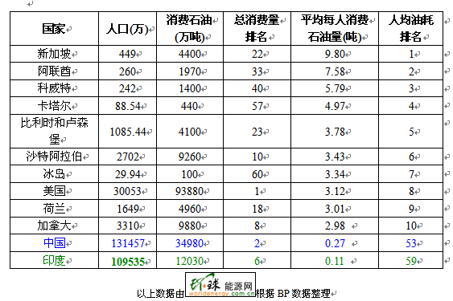

|
我们对地球的态度
2006年夏天我拍摄上海一个月住在锦江乐园附近的小区，朋友特别劝告：自来水只能洗澡，烧开了也不能喝，瓶装水才能喝。我试了一下烧开的自来水，确实有种难言的参杂着漂白粉气息的怪味。上海作为中国最大和最富有的城市，自来水厂的技术和工艺是没问题的，问题在于水源太差。建设部的统计到2005年底，中国城市污水处理率为52%，还有297个城市根本没有污水处理厂，其中包括不少50万人口以上的大城市。长江延绵六千三百公里，沿途大小城市都把它当作了天然下水道，工业污水和生活废水（包括大小便）都直接排放，位于最下游的上海只能自认倒霉。
上海并不是特例，时至公元2008年，大多数人都知道地球正遭遇一场日益严重的环境和生态危机。位于食物链顶端的华南虎和白鳍豚灭绝了（华南虎灭绝时还被一个农民拍照留念），南极臭氧层出现了一个比欧洲面积还大的洞，北极冰盖正加速融化以至于2009年夏天北极有可能变成完全无冰的一片汪洋大海。这对海运业是个好消息，意味着不用破冰船开路就能开通西北通道
- 从北大西洋经北冰洋进入太平洋。此捷径比巴拿马运河航线缩短近4000公里。但这对北极熊以及所有希望后代继续生存的人类来说是一个噩耗，它意味着海面上升，洋流改变，以及无法预测的极端气候灾难。
当今世界面临三大危机：人口，能源和环境。如果这三个问题处理不好，人类的末日就在不久的将来。请注意我说的不是地球的末日，人类灭绝之后地球依然会存在。大自然的自我恢复能力是惊人的，6000万年前小行星撞击地球毁灭了包括恐龙在内的大多数地球生物，但大自然还是以坚强的毅力自我恢复了过来，哺乳动物以及人类都是这次恢复后的新产品。要说地球真正的末日应该还有50亿年之遥，当太阳耗尽燃料熄灭之后。
几十亿年后的事情我们大可不必操心，还是回到眼前的三大危机上来。首先说环境。大多数人看到全球变暖和的新闻只是略微惊讶一下，貌似这是宏观和遥远的事，和日常生活无关。这也难怪大家，因为环境与气候是渐变的，它不会如地震一般突然爆发。就像温水煮青蛙，水温在慢慢升高的前半程青蛙并不觉得，但最后的结果青蛙是被开水煮死了。环境和气候的灾难是渐变但致命的，全球性的，其破坏力远远超出只有几十公里破坏范围的地震，六千万年前恐龙的灭绝就是证明。
幸运的是，对这个温水青蛙问题地球上很多领导人有着清醒认识。2008年7月新加坡内阁资政李光耀在野村证券亚洲股本论坛发表讲话时说，尽管气候变化问题造成诸如冰川融化，河川断流等环境问题确实在发生，然而这些问题还未对人类的生活造成直接冲击，只有当濒水的居民因河流变化而被迫集体搬迁时，受影响的国家才会正视这个问题。“除非问题真实地在人们面前出现，否则人们还是会将它当成理论或学术问题来讨论。”李光耀说。
但李光耀领导下的新加坡在环保方面做得怎么样呢？我的结论是很差。有人会不同意，新加坡不是号称花园城市吗？在植树绿化，环境卫生和污水处理等方面如果说新加坡做得不好，那世界上就没有别的国家能称得上好。我不否认这一点，但新加坡人民安居乐业到处鸟语花香是建立在能源高消费基础上的。请参阅下表，2006年全球石油消费量和人均石油消耗量排行榜：

李光耀(Lee Kuan Yew)曾将空调称为一千年来最重要的发明之一，因为它使热带国家的居民能享受到温带的文明。他本人坚持白天将温度设在22度，夜间设在19度。处于热带的新加坡被是毫不夸张的“空调之国”，居民家里都装满了空调自不待说，你很难找到一个没有冷气的公共场所。新加坡公共场所冷气温度之低相信很多旅游者都感同身受，因为很多人都感冒过。我在新加坡国立大学读书期间，很多女同学书包里都带着毛衣以防感冒，而室外的温度是常年在30度以上的。半夜走在新加坡居民区，每栋楼都灯火通明，走廊的灯从来不关，整个新加坡城一片辉煌。
2005年一次技术故障引起的印尼天燃气管道泄漏致使新加坡电厂瘫痪，新加坡城几乎一半都陷入黑暗。这是可以理解的，因为新加坡没有核电也基本没有煤电，都靠进口石油和天然气发电。2006年新加坡人均石油消费量排名世界第一，当然新加坡人均GDP也排名亚洲首位（2008年已超过日本）。
上表列出的世界人均石油消费前十名大家可以看出，没有一个穷国，都是富人俱乐部的。这个事实说明，生活水平越高，消耗能源就越多，对环境的破坏就越大。这个道理很简单，骑自行车改开汽车了，摇蒲扇改用空调冷气了，住茅草房的改住公寓别墅了，喝粥的改喝牛奶了。哪个对环境的破坏大，用脚趾头都能判断出来。所以说，美国新加坡阿联酋这些富裕国家给全世界带了一个很坏的榜样。中国印度和非洲那些穷国，哪个不是铆足了劲疯狂开发，连做梦都在想加入富人俱乐部？
2006年中国平均每人消耗石油0.27吨，要是中国人均消费石油达到美国的水平，即每人每年3.12吨，那全世界现在每年全部石油产量都给中国还不够。如果有一天地球人平均都达到美国人的生活标准和能源消耗水平，那将是地球的真正灾难。
但是，我们总不能发展吧？凭什么美国人就要开汽车而我们中国人就只能骑自行车？大家都在挤致富的公共汽车，日本和欧美已经挤上去了，就在车上大声呼喊：别再上了，已经装不下了，走路有利于环保。而中国和印度还在车门下面挤，回答说：靠，就许你们坐车，要老子走路？
这个地球上到底有没有生活富裕而又人均能源消费低的国家呢？抱歉，这个答案是没有。
从镰刀锄头到蒸汽机，再到内燃机和电动机，我们靠技术进步提高了生活水平。这里技术进步的潜台词就是能源消费增加。蒸汽机是烧煤的，内燃机是喝油的，电动机的电是靠烧煤和油发出来的。
许多人同样希望靠技术进步来挽救地球，也就是说从现在起只要我们注重节能减排，注重生态保护，地球的环境问题就能解决。这个观点是错误的。不管你如何节能减排，不管你如何注重环保，如果要达到较高的生活水平，对环境的破坏是不可避免的。房子汽车电脑家具等这些现代生活的基础物品不是天上掉下来的，它们都来源于金属，水泥，塑料，木材等基础材料。炼钢的铁矿石和制造水泥的石灰石都要从山上挖掘，塑料是石油的副产品，木材是砍伐森林所得。电器和汽车等现代生活物品的生产过程是一次污染，在使用它们的过程中还造成二次污染，因为它们都需要不断消耗能源才能运行，没有汽油或者没有电它们都是一堆废铁。
国际能源机构在2007年11月7日公布的《2007年世界能源展望》报告中指出，如果不采取措施限制能源消耗，未来20多年内世界能源消耗量将剧增55%，这将使能源价格持续攀升并给环境带来严重后果。报告认为，在找到相应的替代能源之前，石油和天然气仍将是最主要的能源。到2030年，全球原油日均需求量将从2006年的
8400万桶增加到1.61亿桶。随着能源消耗的不断增长，温室气体排放量逐渐增多，对环境造成的难以逆转的破坏也会不断加大。
|